Chapitre VI — Analyse bivariée
Dans ce chapitre, nous allons décrire comment deux variables changent ensemble.
- Quels types de lien peut-il y avoir entre deux variables ?
- Comment détecter et mesurer ce lien ?
- Comment utiliser ce lien pour faire des prédictions ?
VI.1 Types de lien entre deux variables
Rappelons les notions de variable indépendante et variable dépendante, vues dans le chapitre 2.
Dans une expérience, la variable indépendante est celle que le chercheur manipule, tandis que la variable dépendante est celle qui est mesurée pour observer la réponse à la manipulation.
On rappelle que contrairement au langage courant, la variable dépendante ne dépend pas nécessairement de la variable indépendante : cette terminologie reflète le rôle joué par les variables dans une expérience, et non pas la nature de leur relation. Notons aussi que la "manipulation" de la variable indépendante peut être plus ou moins artificielle : dans une expérience, le chercheur peut faire varier la variable indépendante en assignant les participants à différents groupes, ou en leur faisant suivre différentes procédures. Mais dans une étude observationnelle, le chercheur peut simplement mesurer la variable indépendante telle qu'elle existe naturellement, sans intervenir et utiliser ses variations naturelles pour expliquer les variations de la variable dépendante.
VI.1.1 Causalité
Dire que la variable $X$ cause la variable $Y$ signifie que la présence ou l'amplitude de $X$ est directement responsable de la présence ou de l'amplitude de $Y$. En d'autres termes, la variable $Y$ dépend de la variable $X$ au sens habituel du terme "dépendance" : $Y$ ne peut pas exister ou ne peut pas prendre certaines valeurs sans $X$. On dit que $X$ est la variable causale de $Y$.
Dans une expérience étudiant une relation de causalité, la variable indépendante est la cause et la variable dépendante est l'effet. La relation est à sens unique et faire artificiellement varier la variable d'effet ne fera pas varier la variable causale.
Le tabagisme est une cause du cancer du poumon : fumer des cigarettes augmente le risque de développer un cancer du poumon, mais développer un cancer du poumon ne fait pas augmenter le risque de devenir fumeur.
VI.1.2 Influence (mutuelle)
Dans la réalité, il est relativement rare que les liens de cause et d'effet entre deux variables soient clairs et surtout "totaux" au sens où une variable explique complètement l'autre. Souvent, pour un effet donné, les causes sont multifactorielles et il n'est pas rare que des rétroactions fassent que la variable "d'effet" entraine des variations dans la variable de "cause". Dans ces cas où il existe une influence mais où la causalité n'est pas aussi nette que pour un lien de causalité à proprement parler, on parle, sans surprise de lien d'influence.
Deux variables $X$ et $Y$ sont dites en relation d'influence si elles varient ensemble de manière que les variations de $X$ soient responsables des variations de $Y$, et/ou que les variations de $Y$ soient responsables des variations de $X$.
L'inflation est, grossièrement, causée par le fait que "trop" d'argent se dispute "trop peu" de biens. Une manière de faire baisser l'inflation est d'encourager les gens à garder leur argent dans leur épargne, en augmentant les taux d'intérêts. Ainsi, il y a un lien entre les taux d'intérêts et l'inflation, et ce lien est bidirectionnel. En effet, trop d'inflation est mauvaise pour l'économie et une inflation élevée pousse les banques centrales à augmenter leur taux directeur qui, à son tour, pousse l'inflation vers le bas.
VI.1.3 Concomitance
On l'a déjà vu dans la première partie du cours, des grandeurs peuvent varier ensemble sans que l'une soit la cause de l'autre, ni même que les deux s'influencent mutuellement : par exemple, les parapluies et les bottes de pluie sont concomitants, car ils sont tous les deux liés à la pluie, mais ils ne causent pas l'un l'autre et ne s'influencent pas mutuellement.
Deux variables $X$ et $Y$ sont dites concomitantes si elles varient ensemble sans que l'une soit la cause de l'autre, ni que les deux s'influencent mutuellement.
Le cas le plus simple expliquant la concomitance entre deux variables est celui où les deux variables sont causées par une troisième variable.
Le nombre de visites à l'opéra, en concert, etc, et la valeur de la voiture possédée sont positivement liés, mais aucun des deux ne cause l'autre : les deux sont influencés positivement par le revenu disponible.
VI.1.4 Indépendance
À l'opposé de la causalité, il peut y avoir indépendance entre deux variables : les variations de l'une n'ont aucune influence sur les variations de l'autre.
Deux variables $X$ et $Y$ sont dites indépendantes si les variations de $X$ n'ont aucune influence sur les variations de $Y$, et inversement. En d'autres termes, la distribution de $Y$ est la même pour toutes les valeurs de $X$, et la distribution de $X$ est la même pour toutes les valeurs de $Y$.
Le résultat d'un lancer de dé à six faces est indépendant du résultat d'un autre lancer de dé à six faces : les variations de l'un n'ont aucune influence sur les variations de l'autre et la distribution des résultats est la même pour les deux lancers.
Inversement, le fait d'être allé au cinéma et le fait d'avoir mangé du pop-corn ne sont pas indépendants, car parmi les personnes allant au cinéma, la proportion de celles ayant mangé du pop-corn est plus élevée que dans la population générale.
VI.2 Test d'hypothèse : le $\chi^2$
VI.2.1 Généralités sur les tests statistiques
L'idée générale d'un test statistique pour différencier entre deux hypothèses $H_0$ et $H_1$ est de construire un nombre à partir d'un échantillon de données, appelé statistique de test, qui va prendre des valeurs "extrêmes" si l'hypothèse nulle $H_0$ est fausse et des valeurs "modérées" si l'hypothèse nulle $H_0$ est vraie. On calcule cette statistique sur notre échantillon, puis on se pose la question de savoir à quel point l'observation d'une valeur au moins aussi extrême que celle que l'on a observée est probable si $H_0$ est vraie. Si l'observation est très improbable (à un niveau fixé à l'avance que l'on appelle le seuil de signification) sous $H_0$, alors on rejette $H_0$ au profit de $H_1$. Inversement, si l'observation donne quelque chose "d'attendu" sous $H_0$, on continue de croire que $H_0$ est vraie (au moins provisoirement) et on ne rejette pas $H_0$ au profit de $H_1$.
Un professeur soupçonne un groupe d'étudiants d'avoir triché lors d'un examen. Il constate que les notes des étudiants sont normalement distribuées dans tout le groupe. Il décide de calculer la moyenne et l'écart-type des notes de la classe (disons $\mu = 64$ et $\sigma = 20$), puis de calculer la moyenne des 15 élèves soupçonnés de tricherie. Il trouve une moyenne de $\bar{x} = 76$. Si le professeur se trompe, et que les étudiants accusés forment en fait un échantillon aléatoire de la classe, le théorème central limite nous dit que la probabilité d'observer une moyenne de 76 ou plus est $P(\bar{x} \geq 76) = P(Z \geq (76-64)/(20/\sqrt{15})) = P(Z > 2,32) \approx 0,01$ (où $Z$ suit une loi normale centrée réduite). Le professeur conclut que les étudiants soupçonnés de tricherie ne forment pas un échantillon aléatoire de la classe et qu'au moins une partie d'entre eux a triché.
Il existe une grande variété de tests statistiques, chacun ayant des caractéristiques différentes et étant adapté à des situations différentes.
La confiance d'un test statistique est la probabilité de ne pas rejeter l'hypothèse nulle $H_0$ lorsqu'elle est vraie. Elle est égale à $1-\alpha$, où $\alpha$ est le niveau de signification du test, c'est-à-dire la probabilité de rejeter $H_0$ lorsqu'elle est vraie (erreur de type I).
La puissance d'un test statistique est la probabilité de rejeter l'hypothèse nulle $H_0$ lorsqu'elle est fausse. Elle est égale à $1-\beta$, où $\beta$ est la probabilité de ne pas rejeter $H_0$ lorsqu'elle est fausse (erreur de type II).
| Décision du test | Réalité | |
|---|---|---|
| $H_0$ est vraie | $H_0$ est fausse | |
| $H_0$ n'est pas rejetée | Vrai négatif ($1-\alpha$ confiance du test) | Faux négatif (erreur de type II) |
| $H_0$ est rejetée | Faux positif (erreur de type I) | Vrai positif ($1-\beta$ puissance du test) |
Attention : la confiance et la puissance ne permettent pas, en elles-mêmes, de calculer la probabilité de prendre une bonne décision à partir d'un test statistique. La confiance et la puissance sont des propriétés du test lui-même, tandis que la probabilité de prendre une bonne décision dépend aussi de la réalité des échantillons/populations/unités statistiques étudiées.
Dans cet exemple, on utilise le cas d'un test médical, pas d'un test statistique en général, mais les idées présentées sont les mêmes pour tous les tests.
Imaginons que l'on veuille tester la présence d'une maladie chez un patient. La maladie est repérée à partir du niveau d'anticorps dans le sang du patient : si le niveau d'anticorps est supérieur à un certain seuil, alors on considère que le test est positif ("la maladie est détectée"), sinon on considère qu'il est négatif ("la maladie n'est pas détectée").
Imaginons de plus que l'on connaisse la répartition du niveau d'anticorps chez les patients sains et chez les patients infectés.
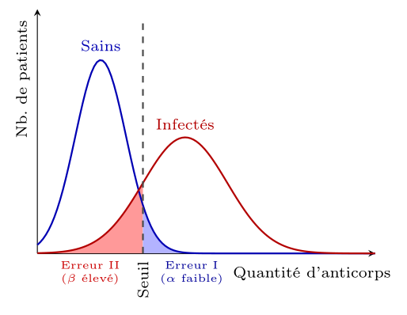
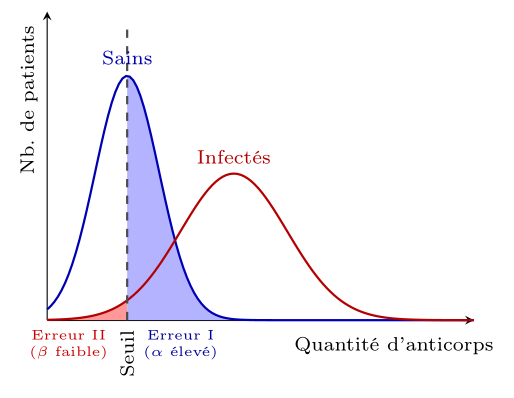
Dans le cas d'un test médical, il est souvent préférable d'avoir un seuil de détection bas, afin de minimiser les faux négatifs (erreur de type II), même si cela signifie avoir un taux de faux positifs plus élevé (erreur de type I), pour être sûr de détecter les patients ayant besoin de traitement. On préférera donc le test de droite, dans lequel il est peu probable de ne pas détecter un patient infecté (grande puissance), même si cela signifie que certains patients sains seront détectés à tort comme infectés (faible confiance).
Si on ajoute à cela l'information que seule une personne sur 10 000 est infectée, si une personne fait un test qui revient positif, le risque que cette personne soit malade est en fait assez faible, car il y a beaucoup plus de chance (a priori) que cette personne soit sur la courbe bleue, où elle a de grande chance d'être détectée par erreur. C'est pour cela que dans le cas de maladies graves avec des traitements lourds, on préfère souvent faire un test de dépistage avec un seuil de détection bas, pour être sûr de détecter les patients ayant besoin de traitement, puis faire un test de confirmation avec un seuil de détection plus élevé, pour être sûr de ne pas traiter des patients sains.
VI.2.2 Test du $\chi^2$
Imaginons que l'on choisisse 100 personnes au hasard au Québec, et qu'on leur fasse chacun tirer une pièce, puis qu'on enregistre le genre de la personne et le résultat du tirage. Comme il y a autant d'hommes que de femmes au Québec (à très peu de choses près), on s'attend à ce qu'on ait 50% d'hommes et, si la pièce n'est pas truquée, que 50% d'entre eux tirent pile, pour un total de 25% d'hommes qui tirent pile. De même, on s'attend à ce que 25% d'hommes tirent face, 25% de femmes tirent pile et 25% de femmes tirent face. Imaginons que l'on observe la répartition suivante :
| Genre | Résultat du tirage | Total | |
|---|---|---|---|
| Pile | Face | ||
| Homme | 31 | 19 | 50 |
| Femme | 18 | 32 | 50 |
| Total | 49 | 51 | 100 |
Il est à peu près clair que les hommes ont tiré plus de piles que les femmes, mais d'un autre côté, c'est un processus aléatoire, il serait étonnant que les valeurs observées soient exactement égales aux valeurs attendues. Est-ce que cette différence est suffisamment grande pour conclure que le genre et le résultat du tirage ne sont pas indépendants ?
Par le théorème central limite, les valeurs observées se comportent comme des variables normales. L'idée, pour mesurer si la différence observée est grande au point d'être "surprenante", est de considérer la distance entre les valeurs observées et les valeurs attendues, en la normalisant par l'écart-type de la distribution des valeurs observées (ainsi, si une fréquence relative attendue de 0,0001 donne 0,01, on compte cela comme plus surprenant qu'une fréquence relative attendue de 0,1 donnant 0,2). Par le TCL, c'est une somme de carrés de lois normales.
La loi du $\chi^2$ à $k$ degrés de liberté décrit la distribution des sommes des carrés de $k$ variables aléatoires indépendantes suivant une loi normale centrée réduite. En d'autres termes, si $Z_1, Z_2, \ldots, Z_k$ sont $k$ variables aléatoires indépendantes suivant une loi normale centrée réduite, alors la variable aléatoire $X = Z_1^2 + Z_2^2 + \ldots + Z_k^2$ suit une loi du $\chi^2$ à $k$ degrés de liberté.
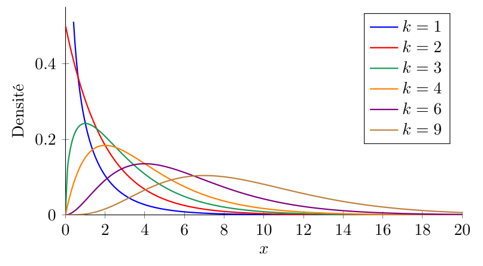
Soient deux variables $X$ et $Y$ ayant respectivement $r$ et $c$ modalités.
On note $n$ le nombre total d'observations, $O_{ij}$ le nombre d'observations ayant la modalité $i$ pour la variable $X$ et la modalité $j$ pour la variable $Y$.
On note également $R_i$ le nombre d'observations ayant la modalité $i$ pour la variable $X$, et $C_j$ le nombre d'observations ayant la modalité $j$ pour la variable $Y$.
La statistique du $\chi^2$ est définie par la formule suivante :
$$
\chi^2_{obs} = \sum_{i=1}^r \sum_{j=1}^c \frac{(O_{ij} - E_{ij})^2}{E_{ij}}
$$
où $E_{ij} = \frac{R_i C_j}{n}$ est le nombre d'observations attendu dans la cellule $ij$ sous l'hypothèse d'indépendance entre les variables $X$ et $Y$.
L'idée de la statistique du $\chi^2$ est de comparer les données observées à ce que l'on attendrait d'observer si les deux variables étaient indépendantes.
On s'attend, même si les variables sont indépendantes, à une petite déviation entre les données observées et les données attendues : la statistique $\chi^2_{obs}$ mesure l'ampleur de cette déviation.
Par le théorème central limite, $O_{ij}$ suit une loi normale dont la moyenne est, si $X$ et $Y$ sont indépendantes, $E_{ij}$.
Sous l'hypothèse d'indépendance, la statistique $T$ suit donc une loi du $\chi^2$1. Inversement, si les variables ne sont pas indépendantes, une des quantités $O_{ij}-E_{ij}$ sera significativement différente de zéro, ce qui fera que la statistique $T$ sera significativement plus grande que ce que l'on attendrait d'observer si les variables étaient indépendantes : si la probabilité d'observer une statistique $T$ aussi grande que celle que l'on a observée, ou plus grande, est inférieure à un seuil de signification (généralement 5%), alors on rejette l'hypothèse d'indépendance entre les variables $X$ et $Y$.
Dans notre exemple de pièce et de genre, la statistique du $\chi^2$ est égale à :
$$
\chi^2_{obs} = \frac{(31-24.5)^2}{24.5} + \frac{(19-25.5)^2}{25.5} + \frac{(18-24.5)^2}{24.5} + \frac{(32-25.5)^2}{25.5} = 6,56.
$$
Si les variables $X$ et $Y$ sont indépendantes, alors la statistique du $\chi^2$ suit une loi du $\chi^2$ à $(r-1) (c-1)$ degrés de liberté.
Pourquoi $(r-1) (c-1)$ degrés de liberté ?
Il y a $r$ modalités pour la variable $X$ et $c$ modalités pour la variable $Y$, ce qui fait $rc$ cellules dans le tableau de contingence.
Cependant, les totaux de chaque ligne et de chaque colonne sont fixés par les données observées, ce qui fait que seulement $(r-1) (c-1)$ cellules sont libres de varier : une fois que les valeurs de $(r-1) (c-1)$ cellules sont fixées, les valeurs des autres cellules sont déterminées par les totaux de chaque ligne et de chaque colonne. Comme la loi du $\chi^2$ est définie à partir de la somme des carrés de variables aléatoires indépendantes, le nombre de degrés de liberté correspond au nombre de cellules libres de varier, soit $(r-1) (c-1)$ d'entre elles.
Dans notre exemple de pièce et de genre, il y a $r=2$ modalités pour la variable "genre" (homme et femme) et $c=2$ modalités pour la variable "résultat du tirage" (pile et face), ce qui fait que la statistique du $\chi^2$ suit une loi du $\chi^2$ à $(2-1) (2-1) = 1$ degré de liberté.
Dans l'exemple suivant, on a une variable nominale (tendance politique) avec 3 modalités (droite, centre, gauche) et une variable de rapport avec 4 classes ($[15-25[$, $[25-45[$, $[45-65[$, $>65$), ce qui fait que la statistique du $\chi^2$ suit une loi du $\chi^2$ à $(4-1) (3-1) = 6$ degrés de liberté.
| Classe d'âge | Tendance politique | Total | ||
|---|---|---|---|---|
| Droite | Centre | Gauche | ||
| $[15, 25[$ | 14 | 13 | 29 | 56 |
| $[25, 45[$ | 15 | 20 | 19 | 54 |
| $[45, 65[$ | 22 | 19 | 10 | 51 |
| $>65$ | 9 | 11 | 3 | 23 |
| Total | 60 | 63 | 61 | 184 |
Il est important de vérifier que les conditions d'application du test du $\chi^2$ sont respectées : généralement, il faut que tous les effectifs attendus $E_{ij}$ soient supérieurs à 5 et que $n \geq 30$ pour que le test soit valide. Cette condition vient essentiellement du fait que l'on approxime le contenu de chaque case du tableau croisé par une loi normale, et que cette approximation est plus fiable lorsque les effectifs attendus sont suffisamment grands.
Dans notre exemple de pièce et de genre, c'est bien le cas, car toutes les fréquences théoriques sont supérieures à 24.
Enfin, on se pose la question de savoir si la valeur observée est "surprenante". Pour cela, il faut d'abord choisir ce que veut dire "être surpris".
Le seuil de signification $\alpha$ d'un test statistique est la probabilité de rejeter l'hypothèse nulle $H_0$ lorsqu'elle est vraie (erreur de type I). En d'autres termes, c'est le niveau de risque que l'on est prêt à accepter pour rejeter $H_0$ à tort. Un seuil de signification de 5% signifie que l'on accepte un risque de 5% de rejeter $H_0$ alors qu'elle est en réalité vraie.
Dans le cas du test du $\chi^2$, qui teste l'existence d'un lien entre variables, le seuil de signification est ce que l'on considère être le risque acceptable de conclure à tort que les variables sont liées alors qu'elles sont en réalité indépendantes.
On veut donc savoir si observer $\chi^2_{obs}$ (ou plus) est improbable ou non si on suppose que les variables sont indépendantes.
La $p$-valeur d'un test statistique est la probabilité, sous l'hypothèse nulle $H_0$, d'observer une statistique de test au moins aussi extrême que celle qui a été observée. Dans le cas du test du $\chi^2$, c'est la valeur de $P(T \geq \chi^2_{obs})$ où $T$ suit une loi du $\chi^2$ à $(r-1) (c-1)$ degrés de liberté.
Dans notre exemple de pièce et de genre, avec $\chi^2_{obs} = 6,56$ et $(r-1) (c-1) = 1$ degré de liberté, la $p$-valeur est égale à $P(T \geq 6,56) \approx 0,01$.
Comme on le voit sur l'exemple suivant, la $p$-valeur dépend à la fois de la valeur de $\chi^2_{obs}$ et du nombre de degrés de liberté. Par exemple, si on avait observé $\chi^2_{obs} = 6,56$ avec 9 degrés de liberté, la $p$-valeur aurait été beaucoup plus grande, soit $P(T \geq 6,56) \approx 0,68$.
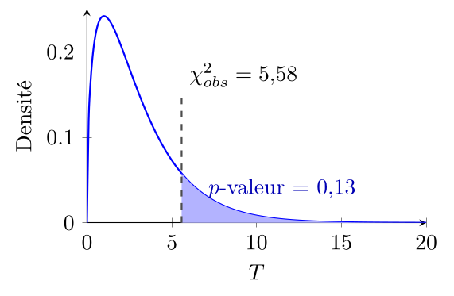
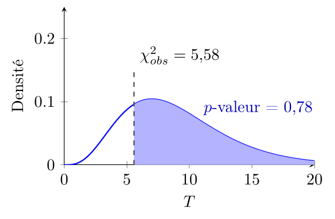
Si notre $p$-valeur est inférieure à notre seuil de signification $\alpha$, on considère le résultat "trop surprenant" sous l'hypothèse $H_0$ et on rejette $H_0$ au profit de $H_1$. Inversement, si notre $p$-valeur est supérieure à notre seuil de signification $\alpha$, on considère le résultat "pas si surprenant" sous l'hypothèse $H_0$ et on ne rejette pas $H_0$ au profit de $H_1$.
Malheureusement, il est difficile de calculer la $p$-valeur à la main étant donné $\chi^2_{obs}$. On peut remarquer que la $p$-valeur est décroissante en fonction de $\chi^2_{obs}$ : plus $\chi^2_{obs}$ est grand, plus la $p$-valeur est petite. On peut donc se contenter de comparer $\chi^2_{obs}$ à la valeur critique de la loi du $\chi^2$ à $(r-1) (c-1)$ degrés de liberté pour le seuil de signification $\alpha$, c'est-à-dire la valeur exacte telle que $P(T \geq \text{valeur critique}) = \alpha$.
Dans notre exemple de pièce et de genre, avec $\alpha = 0,05$ et $(r-1) (c-1) = 1$ degré de liberté, la valeur critique est égale à $\chi^2_{critique} = 3,84$.
Si $\chi^2_{obs}$ est supérieur à la valeur critique, alors la $p$-valeur est inférieure à $\alpha$ et on rejette $H_0$. Inversement, si $\chi^2_{obs}$ est inférieur à la valeur critique, alors la $p$-valeur est supérieure à $\alpha$ et on ne rejette pas $H_0$.
Dans notre exemple, comme $\chi^2_{obs} = 6,56$ est supérieur à la valeur critique $\chi^2_{critique} = 3,84$, on rejette l'hypothèse d'indépendance entre le genre et le résultat du tirage.
Tout cela se résume par la méthodologie suivante pour réaliser un test du $\chi^2$ d'indépendance entre deux variables qualitatives (ou quantitatives regroupées en classes) $X$ et $Y$ :
Préparation du test.
- Choix ou identification des variables $X$ et $Y$ à tester.
- Recensement du nombre de modalités ou classes de chaque variable : $l$ pour la variable $X$ et $c$ pour la variable $Y$.
- Formulation des hypothèses : $H_0 =$ "les variables $X$ et $Y$ sont indépendantes" et $H_1 =$ "les variables $X$ et $Y$ ne sont pas indépendantes".
- Choix du seuil de signification $\alpha$ (généralement 5%).
- Récolte ou récupération des données.
Réalisation du test.
- On présente les données sous la forme d'un tableau croisé des fréquences absolues observées $O_{ij}$, où $i$ correspond à la modalité $i$ de la variable $X$ et $j$ correspond à la modalité $j$ de la variable $Y$.
- On calcule les totaux de chaque ligne $L_i$ et de chaque colonne $C_j$, ainsi que le total général (qui est la taille de l'échantillon) $n$.
- Pour chaque paire de modalités $i$ et $j$, on calcule le nombre d'observations attendu $E_{ij} = \frac{L_i C_j}{n}$ sous l'hypothèse d'indépendance.
- On vérifie que les conditions d'application du test du $\chi^2$ sont respectées : généralement, il est recommandé que tous les effectifs attendus $E_{ij}$ soient supérieurs à 5 pour que le test soit valide.
- On calcule la statistique du $\chi^2$ : $\chi^2_{obs} = \sum_{i=1}^{r} \sum_{j=1}^{c} \frac{(O_{ij} - E_{ij})^2}{E_{ij}}$.
- On compare la statistique $\chi^2_{obs}$ à la valeur critique de la loi du $\chi^2$ à $(l-1) (c-1)$ degrés de liberté pour le seuil de signification $\alpha$.
- Si $\chi^2_{obs}$ est supérieur à la valeur critique, on rejette l'hypothèse nulle $H_0$ et on conclut que les variables $X$ et $Y$ ne sont pas indépendantes. Sinon, on ne rejette pas l'hypothèse nulle $H_0$ et on conclut que les données ne fournissent pas suffisamment de preuves pour rejeter l'indépendance entre les variables $X$ et $Y$.
Organisation du tableau croisé et notations pour le test du $\chi^2$.
| Variable $X$ | $Y_1$ | $\cdots$ | $Y_j$ | $\cdots$ | $Y_c$ | Total lignes |
|---|---|---|---|---|---|---|
| $X_1$ | $O_{11}$ | $\cdots$ | $O_{1j}$ | $\cdots$ | $O_{1c}$ | $L_1$ |
| $\vdots$ | $\vdots$ | $\ddots$ | $\vdots$ | $\ddots$ | $\vdots$ | $\vdots$ |
| $X_i$ | $O_{i1}$ | $\cdots$ | $O_{ij}$ | $\cdots$ | $O_{ic}$ | $L_i$ |
| $\vdots$ | $\vdots$ | $\ddots$ | $\vdots$ | $\ddots$ | $\vdots$ | $\vdots$ |
| $X_l$ | $O_{l1}$ | $\cdots$ | $O_{lj}$ | $\cdots$ | $O_{lc}$ | $L_l$ |
| Total colonnes | $C_1$ | $\cdots$ | $C_j$ | $\cdots$ | $C_c$ | $n$ |
Interprétation du test du $\chi^2$
L'interprétation standard du résultat du test du $\chi^2$ est selon le cas :
ou, de façon équivalente :
Typiquement, pour être plus clair, on préfèrera remplacer $H_0$ et $H_1$ par leur signification concrète. Par exemple, dans notre exemple de pièce et de genre, on dira plutôt :
Coefficient de Cramér
Comme les valeurs attendues du $\chi^2$ dépendent du nombre de degrés de liberté, il est difficile de comparer les résultats de différents tests du $\chi^2$ entre eux.
Le coefficient de Cramér est une mesure d'association entre deux variables qualitatives qui permet de comparer les résultats de différents tests du $\chi^2$ entre eux, indépendamment du nombre de degrés de liberté. De la même façon, quand la taille de l'échantillon augmente, même si le théorème central limite garantit que l'écart relatif entre les effectifs observés et les effectifs théoriques devient très petit ($\sim 1/\sqrt{n}$), l'écart absolu peut devenir très grand ($\sim \sqrt{n}$), ce qui fait que la statistique du $\chi^2$ peut devenir très grande même si les variables sont presque indépendantes. Le coefficient de Cramér permet également de corriger ce problème en normalisant la statistique du $\chi^2$ par la taille de l'échantillon.
Le coefficient de Cramér, noté $V$, est défini par la formule suivante :
$$
V = \sqrt{\frac{\chi^2_{obs}}{n \cdot (\min(l, c) - 1)}}
$$
où $\chi^2_{obs}$ est la statistique du $\chi^2$ observée, $n$ est le nombre total d'observations, $l$ est le nombre de modalités de la variable $X$ et $c$ est le nombre de modalités de la variable $Y$.
Plus le coefficient de Cramér est proche de 0, plus les variables sont indépendantes. Plus le coefficient de Cramér est proche de 1, plus les variables sont associées.
On peut l'interpréter de la manière suivante :
- $V = 0$ : les variables sont indépendantes.
- $0 < V < 0,1$ : il existe une association très faible entre les variables.
- $0,1 \leq V < 0,2$ : il existe une association faible entre les variables.
- $0,2 \leq V < 0,3$ : il existe une association moyenne entre les variables.
- $0,3 \leq V < 0,4$ : il existe une association forte entre les variables.
- $V \geq 0,4$ : il existe une association très forte entre les variables.
Ces niveaux d'interprétations sont conventionnels et peuvent varier en fonction du contexte de l'étude. Il est important de noter que le coefficient de Cramér ne mesure que la force de l'association entre les variables, et non la direction de cette association.
VI.3 Corrélation et régression linéaire
Dans le cas de deux variables quantitatives, on a à notre disposition davantage d'outils mathématiques. En premier lieu, comme chaque donnée peut être placée sur une droite numérique, on peut représenter les données par un nuage de points dans le plan, pour visualiser la relation entre les deux variables.
Le nuage de points d'une série statistique à deux variables quantitatives $X$ et $Y$ est l'ensemble des points du plan de coordonnées $(x_i, y_i)$, où $x_i$ et $y_i$ sont les valeurs de $X$ et $Y$ respectivement pour l'observation $i$, pour $i = 1, 2, \ldots, n$.
Considérons un ensemble de données contenant le PIB par habitant (en USD) et l'Indice de Développement Humain (IDH) de 2023 pour plusieurs pays (Source : Banque mondiale, Programme des Nations Unies pour le développement). Nous voulons visualiser la relation entre ces deux variables quantitatives en créant un nuage de points.
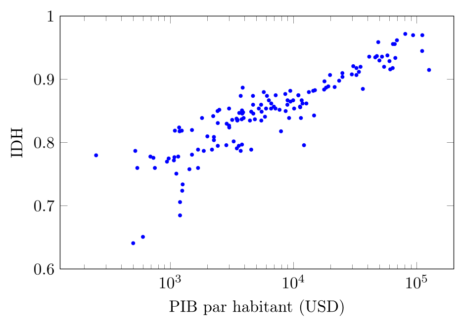
Il apparait clairement qu'il existe une relation entre PIB par habitant et IDH : quand le PIB/hab augmente, l'IDH tend à augmenter également. Ce n'est pas très surprenant, étant donné que le PIB par habitant est l'un des indicateurs utilisés pour calculer l'IDH.
Il faut cependant remarquer que l'IDH n'est pas entièrement déterminé par le PIB par habitant, autrement il n'y aurait aucune variation de l'IDH pour un même PIB par habitant, ce qui n'est pas le cas : on observe une certaine dispersion des points du nuage de points pour un même PIB par habitant, ce qui suggère que d'autres facteurs que le PIB par habitant influencent également l'IDH.
Notons également que l'axe horizontal n'est pas linéaire, mais logarithmique, ce qui indique que la relation entre les deux grandeurs n'est pas si simple qu'elle peut paraitre au premier coup d'œil.
D'une façon générale, une relation entre $X$ et $Y$ apparait dans le nuage de points comme une "forme" autour de laquelle les points sont regroupés, et de façon importante, qui varie à la fois en fonction de $X$ et de $Y$.
Par exemple, dans la figure ci-dessous, $X$ et $Y$ ne sont liés que dans le nuage (b), où étant donné la valeur de $X$, les valeurs de $Y$ sont contraintes à être proches d'une certaine valeur qui dépend de $X$.
Au contraire, dans les nuages (a) et (c), $X$ et $Y$ ne sont pas liés. Dans le nuage (a), varier $X$ n'a aucune influence sur les valeurs de $Y$, qui sont réparties de manière homogène quelle que soit la valeur de $X$ et inversement dans le nuage (c).
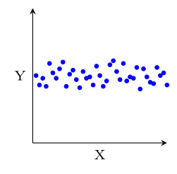
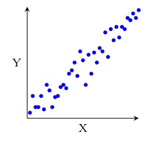
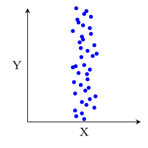
Plusieurs types de relations peuvent exister entre $X$ et $Y$.
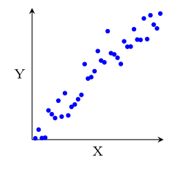
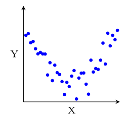
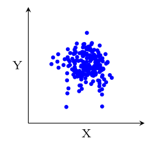
VI.3.1 Corrélation
L'existence de toutes sortes de relations peut être établie via le test du $\chi^2$, mais on peut également tenter de décrire certaines relations en plus grands détail en utilisant les opérations arithmétiques offertes par les variables quantitatives. En particulier, en ce qui concerne le type de relation le plus simple qui soit, une relation "linéaire", où le nuage de points se répartit autour d'une droite, on peut mesurer à quel point le nuage de points est bien approximé par une droite à l'aide du coefficient de corrélation linéaire.
Le coefficient de corrélation linéaire entre deux variables quantitatives $X$ et $Y$ est défini par la formule suivante :
$$
r = \frac{1}{(n-1)s_X s_Y} \sum_{i=1}^n (x_i - \bar{x}) (y_i - \bar{y}),
$$
où $n$ est le nombre d'observations, $s_X$ et $s_Y$ sont les écarts-types de $X$ et $Y$ respectivement, et $\bar{x}$ et $\bar{y}$ sont les moyennes de $X$ et $Y$ respectivement.
On peut donc le réécrire comme :
$$
r = \frac{\sum_{i=1}^n (x_i - \bar{x}) (y_i - \bar{y})}{\sqrt{\sum_{i=1}^n (x_i - \bar{x})^2} \sqrt{\sum_{i=1}^n (y_i - \bar{y})^2}}.
$$
Si on a affaire à une population au lieu d'un échantillon, on peut remplacer $n-1$ par $n$, $\bar{x}, \bar{y}$ par les moyennes théoriques $\mu_X, \mu_Y$ et $s_X, s_Y$ par les écarts-types théoriques $\sigma_X, \sigma_Y$ dans la formule.
Le coefficient de corrélation linéaire $r$ est compris entre -1 et 1.
Plus $r$ est proche de 1, plus les points du nuage de points sont alignés selon une droite de pente positive. Plus $r$ est proche de -1, plus les points du nuage de points sont alignés selon une droite de pente négative. Si $r$ est égal à 0, cela signifie qu'il n'y a pas de corrélation linéaire entre les variables $X$ et $Y$, c'est-à-dire que les points du nuage de points ne sont pas alignés selon une droite2. La force de la corrélation linéaire peut être interprétée comme indiqué ci-dessous.
| Valeur de $\lvert r\rvert$ | Interprétation |
|---|---|
| $0 \leq \lvert r\rvert < 0{,}1$ | Nulle |
| $0{,}10 \leq \lvert r\rvert < 0{,}25$ | Très faible |
| $0{,}25 \leq \lvert r\rvert < 0{,}50$ | Faible |
| $0{,}50 \leq \lvert r\rvert < 0{,}75$ | Modérée |
| $0{,}75 \leq \lvert r\rvert < 0{,}90$ | Forte |
| $0{,}90 \leq \lvert r\rvert \leq 1$ | Très forte à parfaite |
VI.3.2 Régression
Une fois déterminé que $X$ et $Y$ sont liés par une relation linéaire, on peut tenter de trouver la droite qui "s'ajuste" le mieux au nuage de points, c'est-à-dire la droite qui minimise la distance entre les points du nuage de points et la droite.
La droite de régression linéaire de $Y$ sur $X$ est la droite d'équation $y = a + b x$ qui approxime le mieux le nuage de points (au sens de minimiser la somme des carrés des distances verticales entre les points du nuage de points et la droite).
Les coefficients $a$ et $b$ de la droite de régression linéaire de $Y$ sur $X$ peuvent être calculés à partir des moyennes et des écarts-types des variables $X$ et $Y$, ainsi que du coefficient de corrélation linéaire $r$ :
$$
b = r \frac{s_Y}{s_X}, \qquad a = \bar{y} - b \bar{x}.
$$
Bien sûr, si on considère une population au lieu d'un échantillon, on peut remplacer les moyennes et les écarts-types par leurs versions théoriques dans la formule ci-dessus.
Dans le cas d'une série temporelle, la droite de régression linéaire de $Y$ sur $X$ est appelée droite de tendance de la série temporelle.
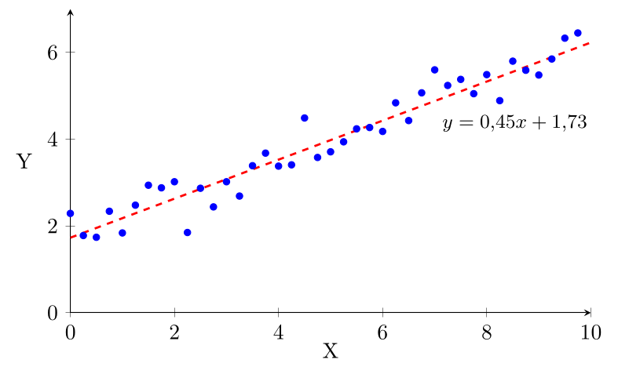
Ici, le coefficient de corrélation est $r = 0{,}97$, la moyenne de $X$ est $\bar{x} = 4{,}88$, l'écart-type de $X$ est $s_X = 2{,}92$, la moyenne de $Y$ est $\bar{y} = 3{,}95$ et l'écart-type de $Y$ est $s_Y = 1{,}37$, ce qui donne bien $b = 0,97 \times 1{,}37 / 2{,}92 = 0{,}45$ et $a = 3{,}95 - 0{,}45 \times 4{,}88 = 1{,}73$.
Enfin, on peut se demander à quel point la variable indépendante $X$ explique la variable dépendante $Y$. En d'autres termes, on peut se demander quelle proportion de la variance de $Y$ est expliquée par la relation linéaire entre $X$ et $Y$.
Le coefficient de détermination est défini comme $r^2$, le carré du coefficient de corrélation linéaire.
C'est la proportion de la variance de $Y$ qui est expliquée par la relation linéaire entre $X$ et $Y$.
Dans l'exemple précédent, le coefficient de détermination est $r^2 = 0{,}93$, ce qui signifie que 93% de la variance de $Y$ est expliquée par la relation linéaire entre $X$ et $Y$.
Si on reprend le même nuage de points mais qu'on l'étire verticalement, on augmente la variance de $Y$ sans changer la relation linéaire entre $X$ et $Y$, ce qui fait que le coefficient de corrélation linéaire diminue, et donc que le coefficient de détermination diminue également. Ainsi, dans le diagramme suivant, qui a la même droite de régression, le coefficient de détermination est de $r^2 = 0{,}60$.
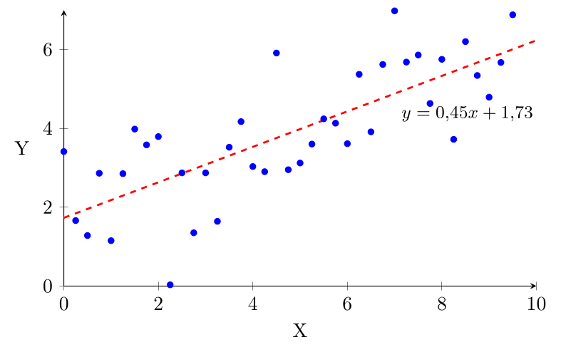
Dans ce nouvel exemple, le coefficient de corrélation linéaire est $r = 0{,}78$, ce qui signifie que la relation linéaire entre $X$ et $Y$ est plus faible que dans l'exemple précédent. Le coefficient de détermination est alors $r^2 = 0{,}60$, ce qui indique que seulement 60% de la variance de $Y$ est expliquée par la relation linéaire avec $X$.
On peut également se demander si la relation linéaire entre $X$ et $Y$ est statistiquement significative, c'est-à-dire si elle est suffisamment forte pour ne pas être due au hasard : si on regarde trois points pris au hasard, il y a de bonnes chances pour que l'on puisse faire passer une droite près des trois.
Au contraire, si un nuage de 1000 points est très bien ajusté par une droite, ce n'est probablement pas dû au hasard de la mesure.
Ainsi, plus la taille de l'échantillon est faible, plus il faut que la relation soit forte pour être considérée comme significative.
| Seuil de signification | Taille de l'échantillon | |||||
|---|---|---|---|---|---|---|
| 5 | 10 | 20 | 50 | 100 | 1000 | |
| $5\%$ | $0{,}878$ | $0{,}632$ | $0{,}444$ | $0{,}279$ | $0{,}197$ | $0{,}062$ |
| $2\%$ | $0{,}934$ | $0{,}715$ | $0{,}444$ | $0{,}328$ | $0{,}232$ | $0{,}074$ |
| $1\%$ | $0{,}959$ | $0{,}765$ | $0{,}561$ | $0{,}361$ | $0{,}256$ | $0{,}081$ |
Interprétation des statistiques de régression
On vérifie d'abord que le coefficient de corrélation linéaire $r$ est supérieur à la valeur critique pour le seuil de signification choisi et la taille de l'échantillon. Si c'est le cas, on considère que la relation linéaire entre $X$ et $Y$ est statistiquement significative, et on peut commenter sur la force et la direction de cette relation, ainsi que sur la proportion de la variance de $Y$ qui est expliquée par cette relation linéaire (coefficient de détermination $r^2$).
Par exemple, si on a $n = 10, r = -0,78, r^2 = 0,60$ et $\alpha = 5\%$ on l'interprète comme :
Inversement, si on a $n = 10, r = 0{,}50, r^2 = 0{,}25$ et $\alpha = 5\%$, on l'interprète comme :
On peut ensuite donner une interprétation plus concrète à partir de l'équation de la droite de régression linéaire. Supposons qu'on ait établi qu'il existe une relation significative entre X et Y et qu'on ait calculé la droite de régression linéaire de $Y$ sur $X$ donnée par l'équation $y = ax + b$. On peut alors interpréter le coefficient de pente $a$ comme la variation moyenne de $Y$ pour une unité de variation de $X$.
Souvent, le coefficient $a$ n'est pas entier, par exemple $a = 1,25 = 5/4$. Dans ce cas, pour rendre l'interprétation plus concrète, on peut dire "En moyenne, pour chaque augmentation de 4 unités de $X$, $Y$ augmente de 5 unités".
VI.3.3 Prédictions ?
Si on a réussi à extraire une droite de régression ou de tendance des données, on peut l'utiliser pour inférer des valeurs de $Y$ à partir de valeurs de $X$ : si on a une droite de régression linéaire de $Y$ sur $X$ donnée par l'équation $y = a + b x$, alors pour une valeur donnée de $X$, disons $x_0$, on peut prédire la valeur correspondante de $Y$ en calculant $y_0 = a + b x_0$.
Dans notre exemple précédent, si on veut prédire la valeur de $Y$ pour $X = 6$, on peut calculer $y = 0{,}45 \times 6 + 1{,}73 = 4{,}43$.
Cependant, il est important de noter que ces prédictions ne sont fiables que si la relation linéaire entre $X$ et $Y$ est suffisamment forte (c'est-à-dire si le coefficient de corrélation linéaire est élevé) et si les données utilisées pour construire la droite de régression sont représentatives de la population ou du phénomène que l'on souhaite modéliser.
Il n'est pas raisonnable d'utiliser une estimation linéaire trop loin des données. Par exemple, si on a effectué nos mesures sur une population dont le patrimoine est inférieur à 1 million de dollars, les estimations linéaires pour des patrimoines de l'ordre de 10 milliards de dollars ont toutes les chances d'être très mauvaises. Il est courant d'obtenir une bonne approximation linéaire sur une partie des données sans que la relation globale soit linéaire. De même, lorsqu'il s'agit d'une série temporelle, il est risqué d'utiliser une droite de tendance pour faire des prédictions dans un futur lointain, car la tendance peut changer au fil du temps.
Un exemple célèbre d'une mauvaise utilisation d'une droite de tendance est donné dans la correspondance Will women soon outrun men? par Brian J. Whipp \& Susana Ward, publiée dans le journal Nature en 1992. Dans cette note, les auteurs font une régression linéaire sur les temps de marathon des hommes et de femmes et prédisent que les femmes pourraient battre les temps masculins en 1998. En 2026, le record féminin est de 2h09:56, environ 10 minutes de plus que le record masculin, et 9 minutes de plus que le temps prédit par l'étude pour 1998.
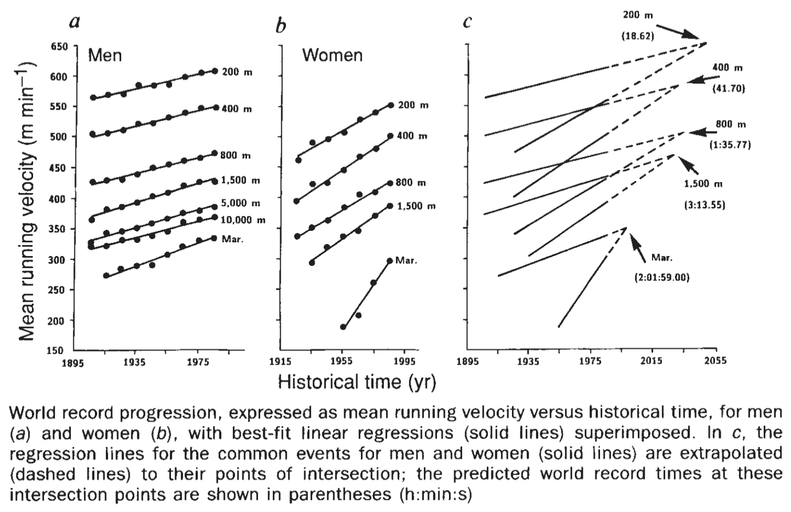
Les auteurs n'ont pas pris en compte que les gains rapides des femmes dans les années 1980 étaient principalement dus à l'augmentation du nombre de femmes participant à des marathons, et que ce gain ne pouvait pas se poursuivre indéfiniment.
L'absurdité du modèle est claire si on le pousse plus loin encore : assez loin dans le futur, le modèle prédit que les femmes courraient le marathon en un temps négatif, ce qui est évidemment impossible.
Résumé du chapitre
Concepts clés
- Causalité : $X$ cause $Y$ si la présence ou l'amplitude de $X$ est directement responsable de $Y$
- Influence : $X$ et $Y$ varient ensemble de manière bidirectionnelle
- Concomitance : $X$ et $Y$ varient ensemble sans lien causal (variable cachée)
- Indépendance : $X$ et $Y$ ne varient pas ensemble
Test du $\chi^2$
- Test d'hypothèse pour déterminer si deux variables qualitatives sont indépendantes
- Statistique de test : $\chi^2_{obs} = \sum_{i,j} \frac{(O_{ij} - E_{ij})^2}{E_{ij}}$
- Degrés de liberté : $ddl = (l-1)(c-1)$
- Si $p$-valeur $< \alpha$, on rejette $H_0$ (variables liées)
Corrélation et régression
- Coefficient de corrélation $r$ : mesure la force et la direction d'une relation linéaire ($-1 \leq r \leq 1$)
- Droite de régression : $y = a + bx$ où $b = r \frac{s_y}{s_x}$ et $a = \bar{y} - b\bar{x}$
- Le coefficient de détermination $r^2$ représente la proportion de la variance de $Y$ expliquée par $X$
- Les variables $O_{ij} - E_{ij}$ sont clairement centrées, mais il faut un peu plus de travail mathématique pour montrer que diviser par $E_{ij}$ suffit à les réduire dans leur ensemble. ↩
- Ou, si c'est le cas, que la droite est parallèle à un des axes et qu'on ne peut donc rien déduire sur une variable à partir de l'autre. ↩